📖
الهضم والإخراج والتنفس والدوران
الفصل الرابع: عمليات الحياة في الإنسان والحيوانات · الصفحات ١٠٨ – ١١٧
❓ السؤال الأساسيكيف تتم عمليات الهضم والإخراج والتنفس والدوران في كل من الإنسان والحيوانات؟
💡 الزبدة⚖️ انتبهي للفرق🔍 توضيح⚠️ فخ في الاختبار✍️ حلّ سؤال الكتاب
في كل بطاقة فكرة واحدة: اقرئي فقرة الكتاب ثم حاشيتها، ثم اسحبي إلى البطاقة التالية 👈
أنظر وأتساءل
تحتاج أجهزة الحاسوب والسيارات والأجهزة الأخرى إلى الطاقة لتعمل. ما أوجه الشبه بين الحيوانات وهذه الآلات؟ وكيف يحصل الحيوان، كحيوان الباندا، على حاجته من الماء والطاقة؟ وكيف يستخدمهما لكي يتمكن من العيش؟
✍️ الجوابفكّري ثم اضغطي
يحتاج الحيوان مثلها إلى الطاقة، فيحصل عليها من الغذاء بعملية الهضم، ثم يطلقها من الجلوكوز بعملية التنفس.
📝 مفردات الدرس
الهضمعملية يتم فيها ابتلاع الغذاء وتفكيكه إلى أجزاء ومركبات بسيطة يمكن للخلايا الاستفادة منها.
الإخراجعملية يتم فيها تخليص الجسم من الفضلات.
التنفسعملية إطلاق الطاقة المختزنة في جزيئات الجلوكوز، وتحدث في الخلايا في وجود الأكسجين.
الدورانحركة المواد المهمة، ومنها الأكسجين والجلوكوز والفضلات، في الجسم.
متغيرة درجة الحرارةحيوانات تتغير درجة حرارة جسمها تبعًا للتغير في درجة حرارة الهواء أو الماء المحيط بأجسامها.
ثابتة درجة الحرارةحيوانات تتصف بثبات درجات حرارة أجسامها حتى لو تغيرت درجة حرارة الوسط المحيط بها.
ص١١٠ · ما الهضم؟ وما الإخراج؟
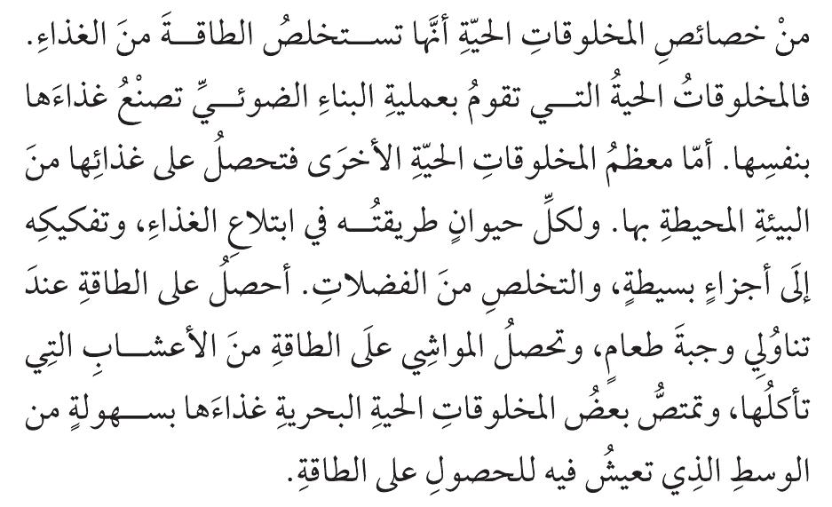
💡 الزبدة
من خصائص المخلوقات الحية أنها تستخلص الطاقة من الغذاء. فالنباتات تصنع غذاءها بالبناء الضوئي، أما معظم المخلوقات الأخرى فتحصل على غذائها من البيئة المحيطة بها.
ص١١٠ · ما الهضم؟ وما الإخراج؟
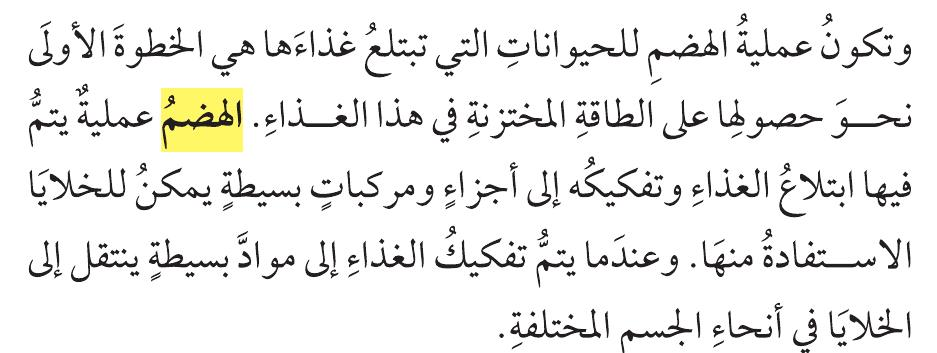
💡 الزبدة
الهضم: ابتلاع الغذاء وتفكيكه إلى أجزاء ومركبات بسيطة يمكن للخلايا الاستفادة منها، ثم تنتقل إلى الخلايا في أنحاء الجسم.
ص١١٠ · ما الهضم؟ وما الإخراج؟
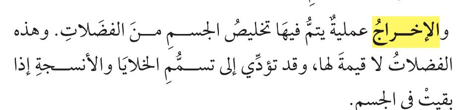
💡 الزبدة
الإخراج: تخليص الجسم من الفضلات؛ لأنها لا قيمة لها، وقد تؤدي إلى تسمّم الخلايا والأنسجة إذا بقيت في الجسم.
ص١١٠ · ما الهضم؟ وما الإخراج؟
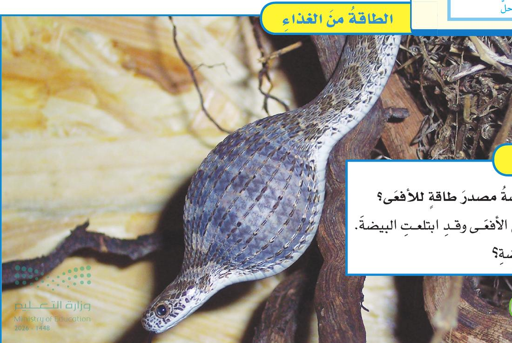
✍️ حلّ «أقرأ الصورة»اضغطي لتري الإجابة
تبتلع الأفعى البيضة، فيهضم جسمها الغذاء المختزن فيها إلى مركبات بسيطة، فتحصل منه على الطاقة.
ص١١١ · الهضم في اللافقاريات والفقاريات
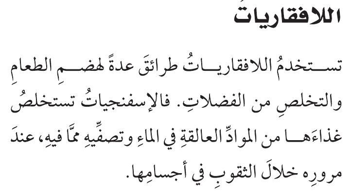
💡 الزبدة
الإسفنجيات تستخلص غذاءها من المواد العالقة في الماء وتصفيها مما فيه عند مروره خلال الثقوب في أجسامها.
ص١١١ · الهضم في اللافقاريات والفقاريات
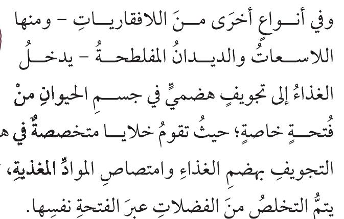
💡 الزبدة
في اللاسعات والديدان المفلطحة يدخل الغذاء إلى تجويف هضمي من فتحة خاصة، وتقوم خلايا متخصصة بهضمه وامتصاصه، ثم يتم التخلص من الفضلات عبر الفتحة نفسها.
ص١١١ · الهضم في اللافقاريات والفقاريات
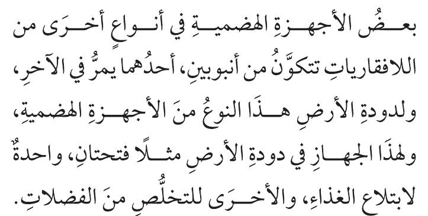
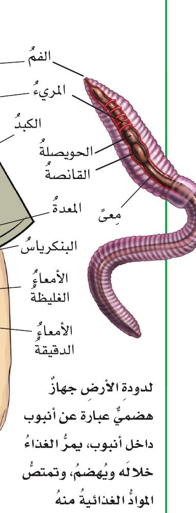
⚖️ انتبهي للفرق
اللاسعات والديدان المفلطحة
فتحة واحدة
تجويف هضمي
دودة الأرض
فتحتان: واحدة لابتلاع الغذاء، والأخرى للتخلص من الفضلات
جهاز هضمي من أنبوبين، أحدهما يمر في الآخر
ص١١١ · الهضم في اللافقاريات والفقاريات
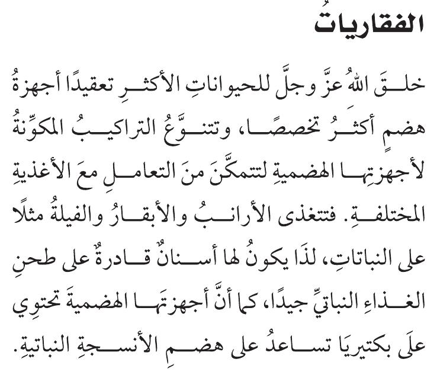
💡 الزبدة
الفقاريات أجهزة هضمها أكثر تخصصًا. فالأرانب والأبقار والفيلة تتغذى على النباتات، لذا تكون أسنانها قادرة على طحن الغذاء النباتي جيدًا، وتحتوي أجهزتها الهضمية على بكتيريا تساعد على هضم الأنسجة النباتية.
ص١١١ · الهضم في اللافقاريات والفقاريات
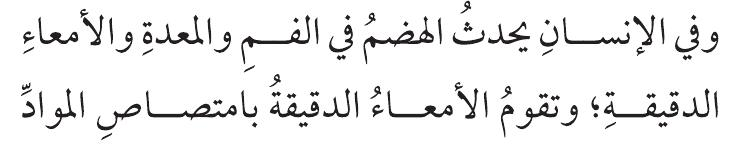
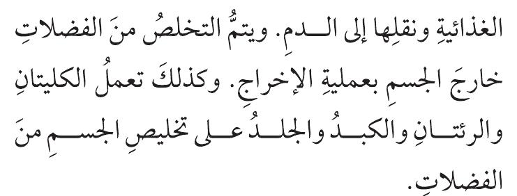
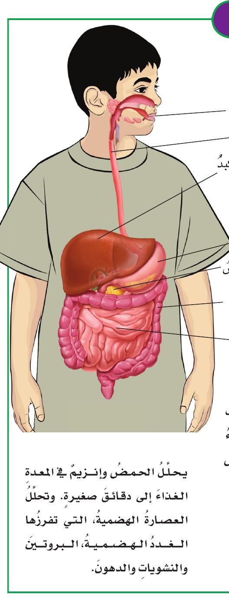
🔍 الهضم في الإنسان
يحدث الهضم في الفم والمعدة والأمعاء الدقيقة، وتقوم الأمعاء الدقيقة بامتصاص المواد الغذائية ونقلها إلى الدم.
وفي المعدة يحلل الحمض والإنزيم الغذاء إلى دقائق صغيرة.
وفي المعدة يحلل الحمض والإنزيم الغذاء إلى دقائق صغيرة.
💡 الزبدة
يتم التخلص من الفضلات بعملية الإخراج، وتعمل الكليتان والرئتان والكبد والجلد على تخليص الجسم منها.
ص١١١ · الهضم في اللافقاريات والفقاريات
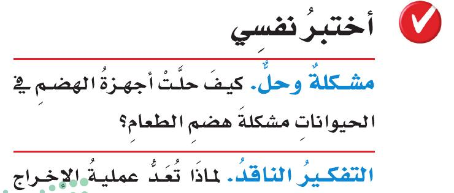
✍️ حلّ «أختبر نفسي»اضغطي لتري الإجابة
مشكلة وحل: طوّرت الحيوانات طرقًا مختلفة؛ فالإسفنجيات تصفّي الغذاء من الماء، وبعض الحيوانات لها تجويف هضمي، ولدودة الأرض أنبوب بفتحتين، وللفقاريات أجهزة هضم متخصصة.
التفكير الناقد: لأن الفضلات لا قيمة لها، وقد تؤدي إلى تسمم الخلايا والأنسجة إذا بقيت في الجسم.
التفكير الناقد: لأن الفضلات لا قيمة لها، وقد تؤدي إلى تسمم الخلايا والأنسجة إذا بقيت في الجسم.
ص١١٢ · ما التنفس؟
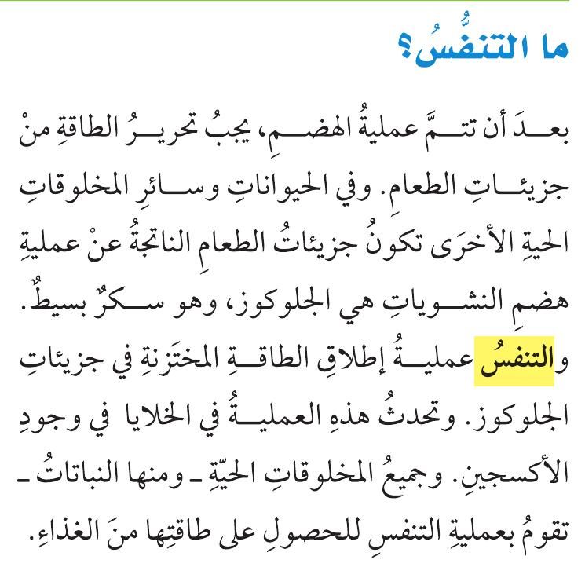
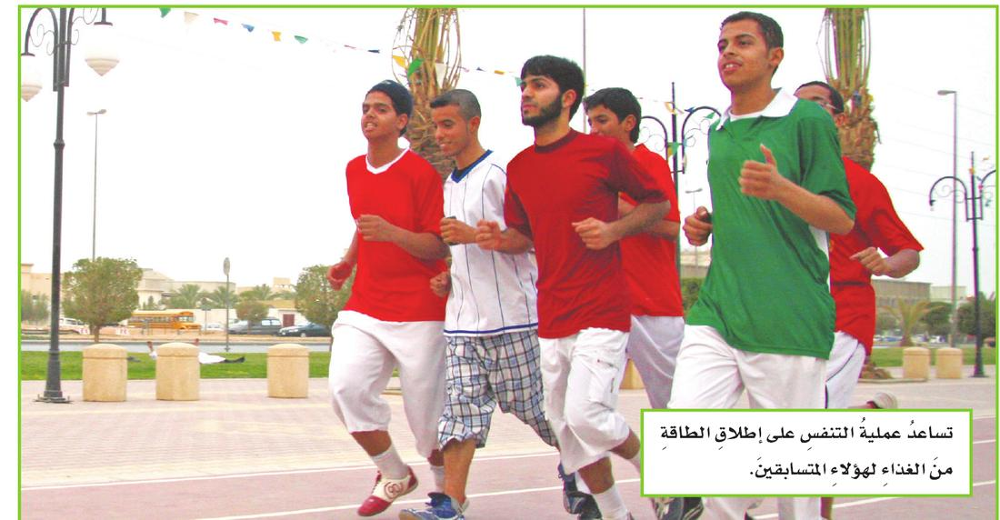
💡 الزبدة
التنفس: عملية إطلاق الطاقة المختزنة في جزيئات الجلوكوز، وتحدث في الخلايا في وجود الأكسجين. وجميع المخلوقات الحية، ومنها النباتات، تقوم بالتنفس.
ص١١٢ · ما التنفس؟
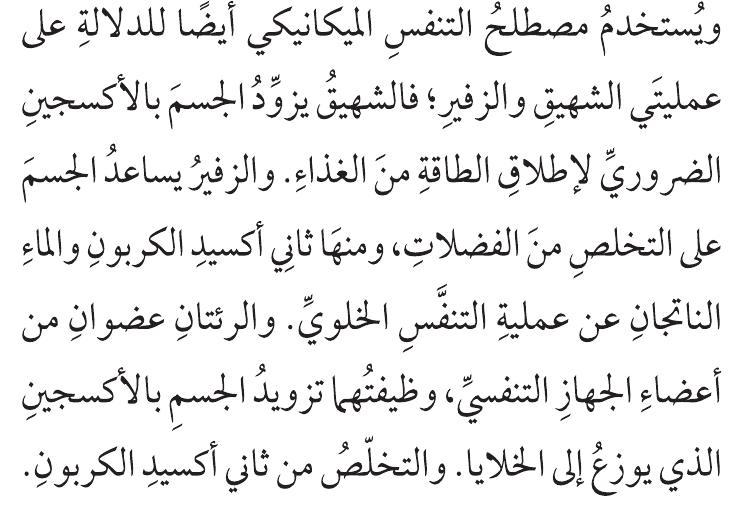
⚖️ انتبهي للفرق
الشهيق
يزوّد الجسم بالأكسجين الضروري لإطلاق الطاقة من الغذاء
الزفير
يساعد الجسم على التخلص من الفضلات، ومنها ثاني أكسيد الكربون والماء
ص١١٢ · ما التنفس؟
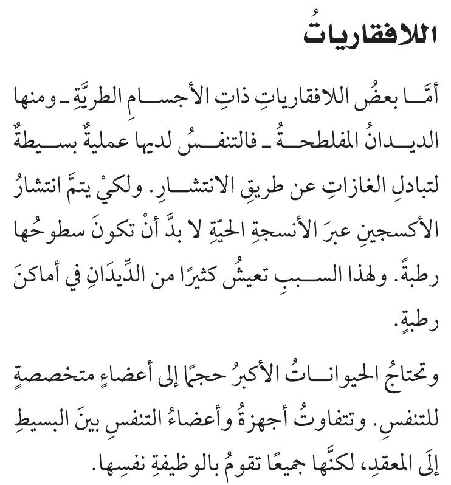
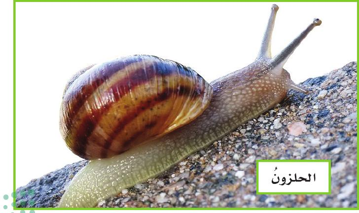
💡 الزبدة
اللافقاريات ذات الأجسام الطرية، ومنها الديدان المفلطحة، تتنفس بالانتشار؛ لذلك لا بد أن يكون سطحها رطبًا، ولهذا تعيش كثير من الديدان في أماكن رطبة.
ص١١٣ · أجهزة التنفس
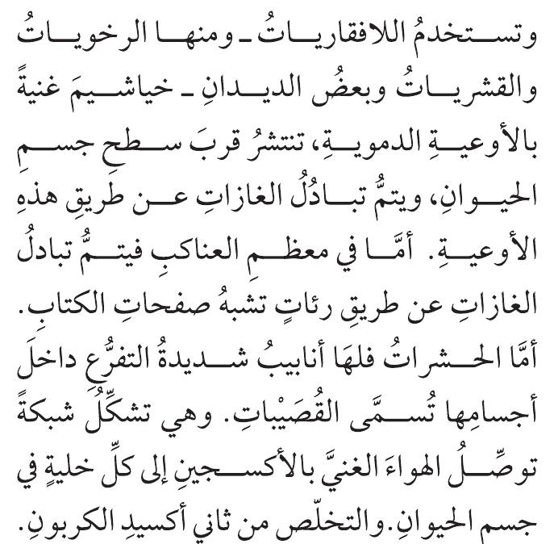
⚖️ تنفس اللافقاريات
الرخويات وبعض الديدان
الخياشيم الغنية بالأوعية الدموية
معظم العناكب
رئات تشبه صفحات الكتاب
الحشرات
القصيبات: أنابيب شديدة التفرع
ص١١٣ · أجهزة التنفس
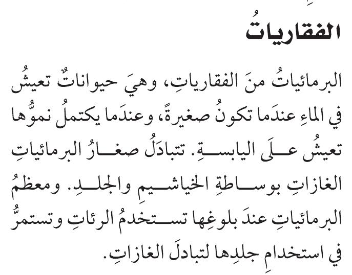
💡 الزبدة
البرمائيات تعيش في الماء عندما تكون صغيرة، وعلى اليابسة عندما يكتمل نموها. تتبادل صغارها الغازات بالخياشيم والجلد، ومعظمها عند بلوغها يستخدم الرئات ويستمر في استخدام جلده.
ص١١٣ · أجهزة التنفس
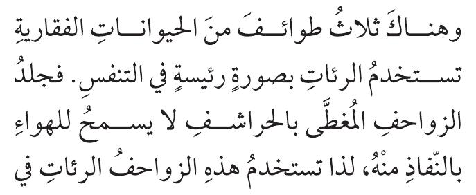
💡 الزبدة
تستخدم الزواحف والطيور والثدييات الرئات بصورة رئيسة في التنفس.
⚠️ فخ في الاختبار
الزواحف تستخدم الرئات؛ لأن جلدها المغطى بالحراشف لا يسمح للهواء بالنفاذ منه.
ص١١٣ · أجهزة التنفس
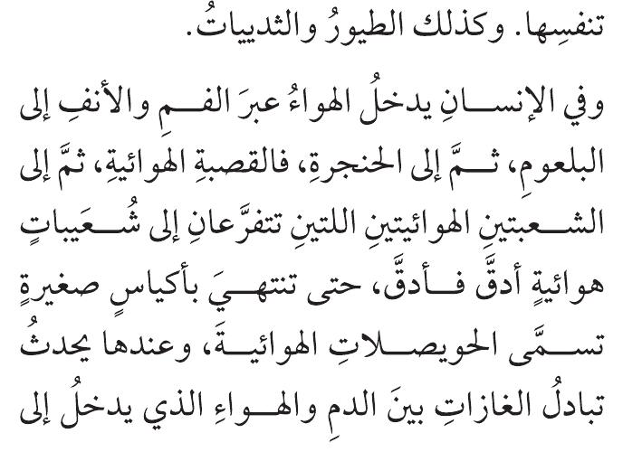
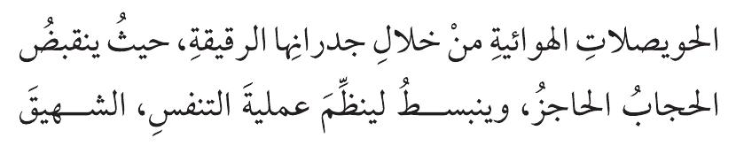
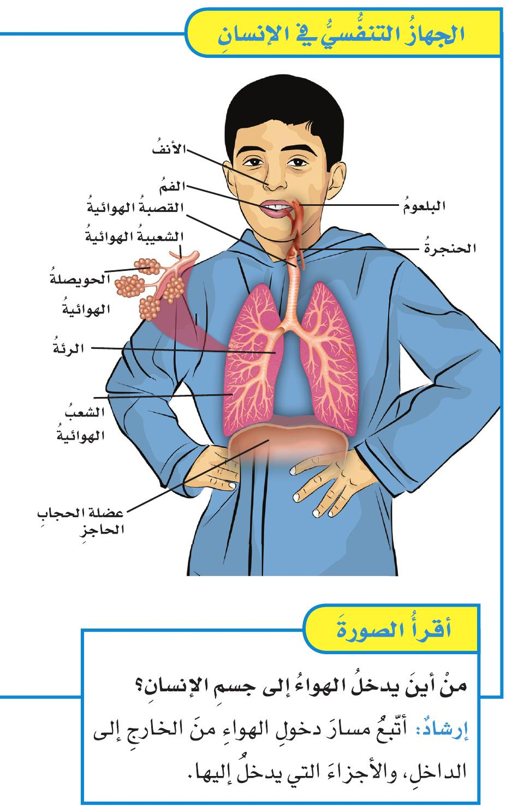
🔍 مسار الهواء في الإنسان
الفم والأنف←البلعوم←الحنجرة←القصبة الهوائية←الشعبتان
ثم الشعيبات الهوائية ← الحويصلات الهوائية حيث يحدث تبادل الغازات.💡 الزبدة
تنقبض عضلة الحجاب الحاجز وتنبسط لتنظيم عمليتي الشهيق والزفير.
✍️ حلّ «أقرأ الصورة»اضغطي لتري الإجابة
يدخل الهواء من الأنف والفم.
ص١١٣ · أجهزة التنفس
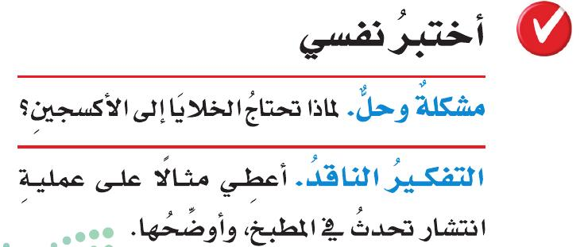
✍️ حلّ «أختبر نفسي»اضغطي لتري الإجابة
مشكلة وحل: لأن الأكسجين ضروري لإطلاق الطاقة المختزنة في الجلوكوز بعملية التنفس.
التفكير الناقد: انتشار رائحة الطعام في المطبخ؛ فجزيئاتها تنتقل من المكان الأكثر تركيزًا إلى الأقل.
التفكير الناقد: انتشار رائحة الطعام في المطبخ؛ فجزيئاتها تنتقل من المكان الأكثر تركيزًا إلى الأقل.
ص١١٤ · الدوران ودرجة حرارة الجسم
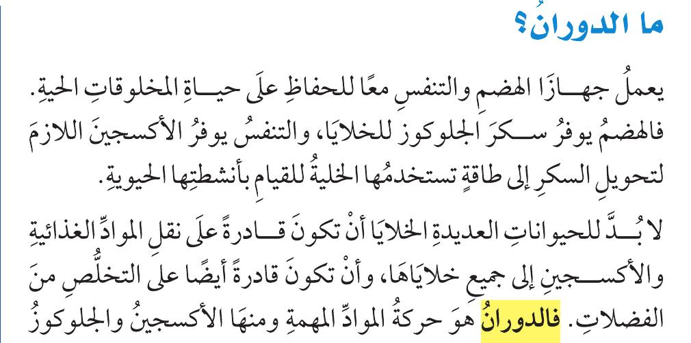
💡 الزبدة
يعمل الهضم والتنفس معًا: الهضم يوفر سكر الجلوكوز، والتنفس يوفر الأكسجين اللازم لتحويله إلى طاقة.
الدوران: حركة المواد المهمة، ومنها الأكسجين والجلوكوز والفضلات، في الجسم.
الدوران: حركة المواد المهمة، ومنها الأكسجين والجلوكوز والفضلات، في الجسم.
ص١١٤ · الدوران ودرجة حرارة الجسم
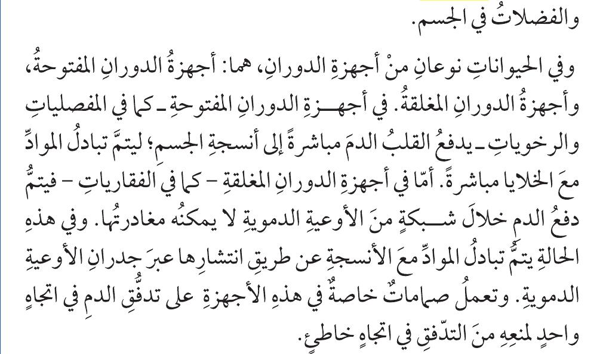
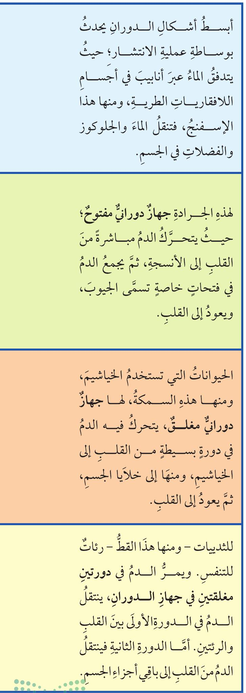
⚖️ انتبهي للفرق
جهاز دوران مفتوح
يدفع القلب الدم مباشرة إلى أنسجة الجسم، ثم يتجمع في الجيوب ويعود إلى القلب
المفصليات (الجرادة) والرخويات
جهاز دوران مغلق
يُدفع الدم خلال شبكة من الأوعية الدموية لا يغادرها
الفقاريات (السمكة، القط)
🔍 توضيح
أبسط أشكال الدوران تحدث بالانتشار، ومنها الإسفنج.
السمكة: دورة بسيطة من القلب إلى الخياشيم ثم إلى خلايا الجسم.
الثدييات: دورتان؛ الأولى بين القلب والرئتين، والثانية من القلب إلى باقي أجزاء الجسم.
السمكة: دورة بسيطة من القلب إلى الخياشيم ثم إلى خلايا الجسم.
الثدييات: دورتان؛ الأولى بين القلب والرئتين، والثانية من القلب إلى باقي أجزاء الجسم.
ص١١٤ · الدوران ودرجة حرارة الجسم
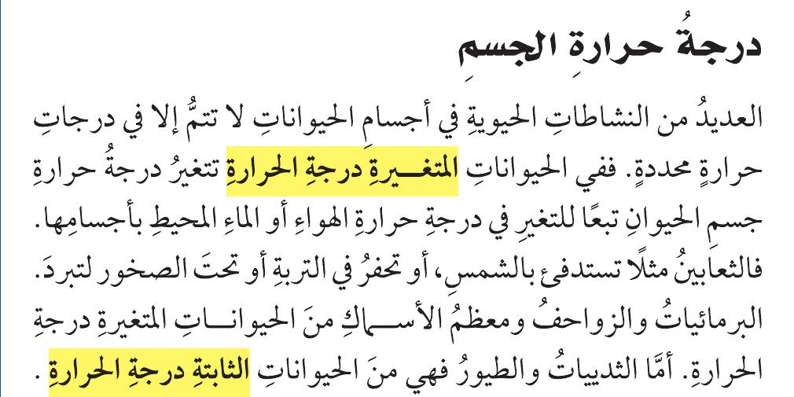
⚖️ انتبهي للفرق
متغيرة درجة الحرارة
تتغير حرارة جسمها تبعًا لحرارة الهواء أو الماء
البرمائيات والزواحف ومعظم الأسماك
ثابتة درجة الحرارة
تثبت حرارة جسمها حتى لو تغيرت حرارة الوسط
الثدييات والطيور
🔍 توضيح
الثعابين تستدفئ بالشمس، أو تحفر في التربة أو تحت الصخور لتبرد.
ص١١٤ · الدوران ودرجة حرارة الجسم
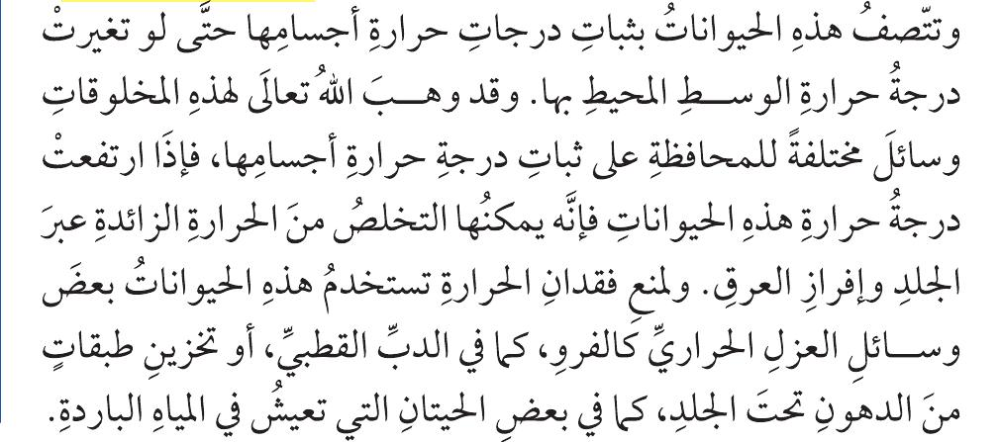
💡 الزبدة
وسائل الحيوانات ثابتة درجة الحرارة: إذا ارتفعت حرارتها تتخلص من الحرارة الزائدة عبر الجلد وإفراز العرق، ولمنع فقدان الحرارة تستخدم وسائل العزل الحراري كالفرو، أو تخزين طبقات الدهون تحت الجلد.
ص١١٦ · الدورة الدموية
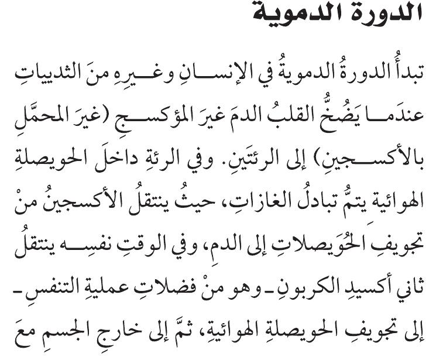
💡 الزبدة
يضخ القلب الدم غير المؤكسج إلى الرئتين، وفي الحويصلات الهوائية يتم تبادل الغازات: ينتقل الأكسجين إلى الدم، وينتقل ثاني أكسيد الكربون إلى الحويصلات، ثم يخرج مع هواء الزفير.
ص١١٦ · الدورة الدموية
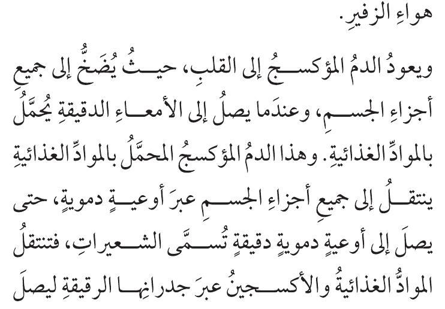
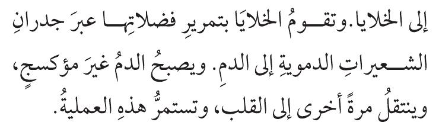
💡 الزبدة
يعود الدم المؤكسج إلى القلب، فيضخه إلى جميع أجزاء الجسم، ويحمل المواد الغذائية من الأمعاء الدقيقة، حتى يصل إلى أوعية دقيقة تسمى الشعيرات، فتنتقل المواد عبر جدرانها الرقيقة إلى الخلايا، وتنتقل الفضلات إلى الدم فيصبح غير مؤكسج.
ص١١٦ · الدورة الدموية
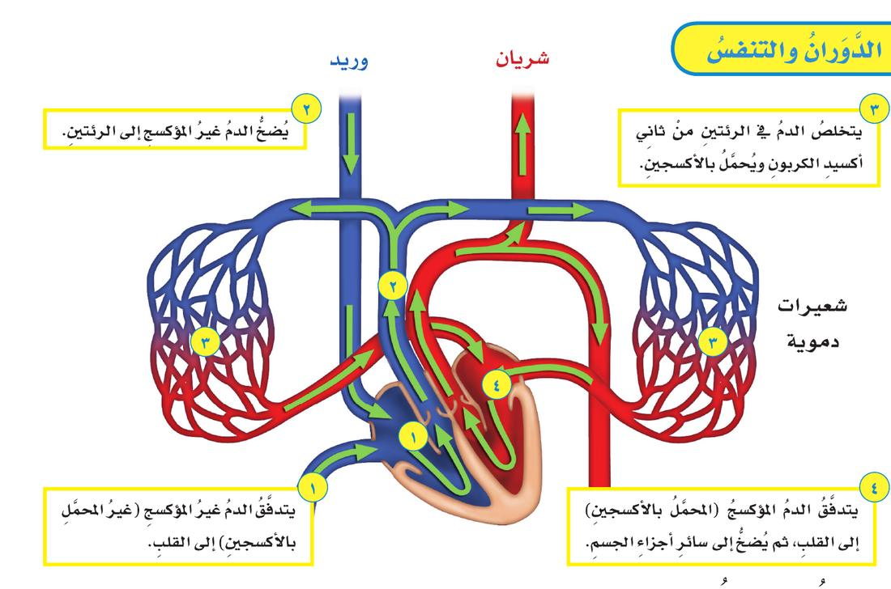
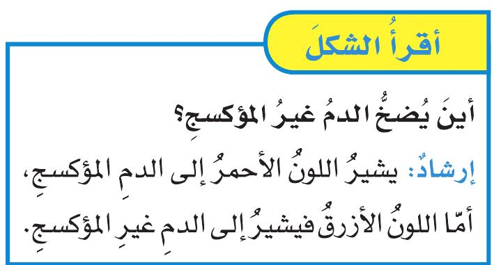
🔍 تتبعي الأرقام
١- يتدفق الدم غير المؤكسج إلى القلب.
٢- يُضخ الدم غير المؤكسج إلى الرئتين.
٣- يتخلص الدم في الرئتين من ثاني أكسيد الكربون ويحمل الأكسجين.
٤- يتدفق الدم المؤكسج إلى القلب، ثم يُضخ إلى سائر أجزاء الجسم.
٢- يُضخ الدم غير المؤكسج إلى الرئتين.
٣- يتخلص الدم في الرئتين من ثاني أكسيد الكربون ويحمل الأكسجين.
٤- يتدفق الدم المؤكسج إلى القلب، ثم يُضخ إلى سائر أجزاء الجسم.
✍️ حلّ «أقرأ الشكل»اضغطي لتري الإجابة
يُضخ الدم غير المؤكسج (الأزرق) إلى الرئتين.
ص١١٦ · الدورة الدموية
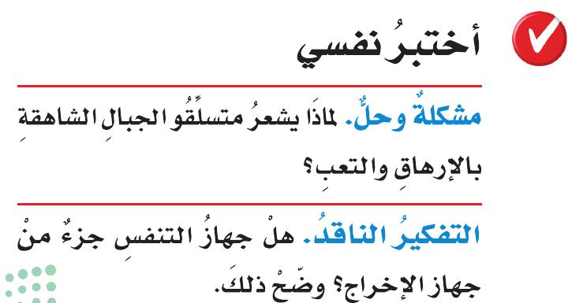
✍️ حلّ «أختبر نفسي»اضغطي لتري الإجابة
مشكلة وحل: لأن الأكسجين في الجبال الشاهقة أقل، فلا تحصل الخلايا على ما تحتاج إليه منه لإطلاق الطاقة.
التفكير الناقد: نعم؛ فالرئتان تخلّصان الجسم من فضلات، ومنها ثاني أكسيد الكربون والماء، مع هواء الزفير.
التفكير الناقد: نعم؛ فالرئتان تخلّصان الجسم من فضلات، ومنها ثاني أكسيد الكربون والماء، مع هواء الزفير.
📌 الخلاصة · خريطة المفاهيم
🍎 الهضميفكك الغذاء إلى مركبات بسيطة
⬇يوفر الجلوكوز لـ
🫁 التنفسيطلق الطاقة من الجلوكوز بالأكسجين
⬇ويعمل معه
❤️ الدورانينقل الأكسجين والجلوكوز والفضلات
⬇ويوصل الفضلات إلى
🚽 الإخراجيخلّص الجسم من الفضلات
أعضاء التنفس
- الانتشار: الديدان المفلطحة
- الخياشيم: الرخويات وصغار البرمائيات
- القصيبات: الحشرات
- الرئات: الزواحف والطيور والثدييات
أعضاء الإخراج في الإنسان
- الكليتان
- الرئتان
- الكبد
- الجلد
📌 الخلاصة · مَن يفعل ماذا؟ اللافقاريات (١)
🧽الإسفنجيات
🍽️ الهضمتصفّي غذاءها من المواد العالقة في الماء عند مروره خلال الثقوب في أجسامها
❤️ الدورانبالانتشار: يتدفق الماء عبر أنابيب في جسمها، فتنتقل الماء والجلوكوز والفضلات
اللاسعات والديدان المفلطحة
🍽️ الهضمتجويف هضمي له فتحة واحدة: يدخل منها الغذاء، وتخرج منها الفضلات
🫁 التنفسالديدان المفلطحة: بالانتشار، لذا يكون سطحها رطبًا وتعيش في أماكن رطبة
🪱دودة الأرض
🍽️ الهضمأنبوب داخل أنبوب، له فتحتان: واحدة لابتلاع الغذاء، والأخرى للتخلص من الفضلات
📌 الخلاصة · مَن يفعل ماذا؟ اللافقاريات (٢)
🐌الرخويات
🫁 التنفسالخياشيم الغنية بالأوعية الدموية
❤️ الدورانجهاز دوران مفتوح
🕷️العناكب
🫁 التنفسمعظمها: رئات تشبه صفحات الكتاب
🦗الحشرات (الجرادة)
🫁 التنفسالقصيبات: أنابيب شديدة التفرع داخل أجسامها
❤️ الدورانجهاز دوران مفتوح (المفصليات)
📌 الخلاصة · مَن يفعل ماذا؟ الفقاريات (١)
🐟الأسماك
🫁 التنفسالخياشيم
❤️ الدورانمغلق، دورة بسيطة: القلب ← الخياشيم ← خلايا الجسم ← القلب
🌡️ الحرارةمعظمها متغيرة درجة الحرارة
🐸البرمائيات
🫁 التنفسصغارها: الخياشيم والجلد
معظمها عند البلوغ: الرئات، وتستمر في استخدام الجلد
معظمها عند البلوغ: الرئات، وتستمر في استخدام الجلد
🌡️ الحرارةمتغيرة درجة الحرارة
🐍الزواحف
🫁 التنفسالرئات؛ لأن جلدها المغطى بالحراشف لا يسمح بنفاذ الهواء
🌡️ الحرارةمتغيرة درجة الحرارة (الثعابين تستدفئ بالشمس)
📌 الخلاصة · مَن يفعل ماذا؟ الفقاريات (٢)
🐦الطيور
🫁 التنفسالرئات
🌡️ الحرارةثابتة درجة الحرارة
🐈الثدييات (القط، الإنسان)
🫁 التنفسالرئات
❤️ الدورانمغلق، دورتان: القلب ↔ الرئتين، ثم القلب ← باقي الجسم
🌡️ الحرارةثابتة درجة الحرارة: العرق للتبريد، والفرو والدهون للعزل
🐇آكلات النباتات (الأرانب، الأبقار، الفيلة)
🍽️ الهضمأسنان قادرة على طحن الغذاء النباتي، وفي جهازها الهضمي بكتيريا تساعد على هضم الأنسجة النباتية
📌 الخلاصة · لا تخلطي بينها
جهاز الدوران المفتوح
أين يجري الدم؟يُدفع مباشرة إلى الأنسجة ويتجمع في الجيوب
أمثلةالمفصليات والرخويات
جهاز الدوران المغلق
أين يجري الدم؟داخل شبكة من الأوعية الدموية لا يغادرها
أمثلةالفقاريات
📌 الخلاصة · لا تخلطي بينها
متغيرة درجة الحرارة
حرارة الجسمتتغير مع حرارة الوسط
أمثلةالبرمائيات، الزواحف، معظم الأسماك
ثابتة درجة الحرارة
حرارة الجسمثابتة
أمثلةالثدييات، الطيور
📌 الخلاصة · أهم النقاط
- الهضم يفكك الغذاء إلى مركبات بسيطة، والإخراج يخلّص الجسم من الفضلات.
- التنفس يطلق الطاقة من الجلوكوز في وجود الأكسجين، والحويصلات الهوائية مكان تبادل الغازات.
- تتنفس الحيوانات بالانتشار أو الخياشيم أو القصيبات أو الرئات.
- الدوران ينقل المواد في الجسم، وجهازه مفتوح أو مغلق، وفي الثدييات دورتان.
- الحيوانات متغيرة درجة الحرارة أو ثابتة درجة الحرارة.
🧠 اختبري نفسك · ١ من ٤
أين يحدث تبادل الغازات في الرئتين؟
✅ الجوابفكّري ثم اضغطي
في الحويصلات الهوائية.
🧠 اختبري نفسك · ٢ من ٤
بمَ تتنفس الحشرات؟
✅ الجوابفكّري ثم اضغطي
بالقصيبات: أنابيب شديدة التفرع داخل أجسامها.
🧠 اختبري نفسك · ٣ من ٤
هل جهاز الدوران في الجرادة مفتوح أم مغلق؟
✅ الجوابفكّري ثم اضغطي
مفتوح.
🧠 اختبري نفسك · ٤ من ٤
هل الطيور متغيرة درجة الحرارة أم ثابتة؟
✅ الجوابفكّري ثم اضغطي
ثابتة درجة الحرارة.
🌟
أحسنتِ!
أنهيتِ مذاكرة الدرس. الآن جاء دور التحديات، وتذكّري: أول محاولة هي المحسوبة 🎯
🎮 انتقلي إلى التحديات📄 الدرس ملف PDF